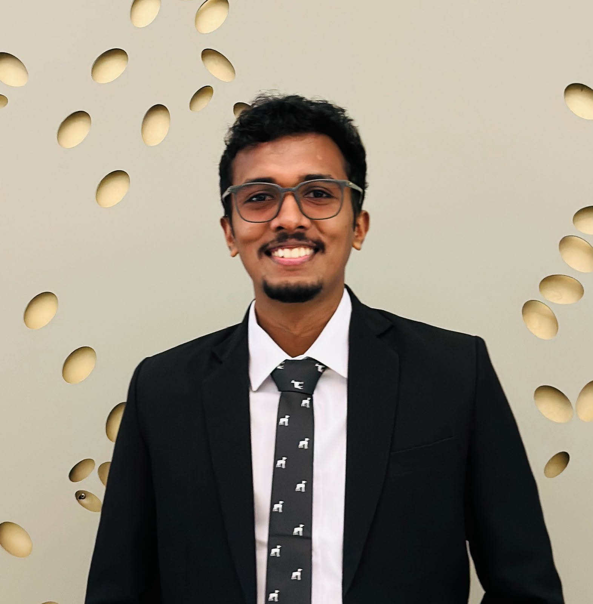

CPU × GPU
Parallel Image Processing
Denoising and edge-detection benchmarks across Serial C++, OpenMP, Pthreads, MPI, Hybrid MPI + OpenMP and CUDA, with a React and Node.js interface.
Computer Engineering undergraduate and former DevOps Engineering intern building cloud infrastructure, intelligent products, and software that performs under pressure.

I enjoy working where software, infrastructure and problem-solving meet. My work ranges from AWS-native event-driven architecture and infrastructure as code to computer vision, full-stack products and high-performance computing.
Beyond engineering, competitive athletics and hackathons have shaped how I lead, communicate and stay composed when the problem gets hard.
More on LinkedIn ↗Cloud, AI, embedded systems and full-stack engineering — selected for range and real-world relevance.
Denoising and edge-detection benchmarks across Serial C++, OpenMP, Pthreads, MPI, Hybrid MPI + OpenMP and CUDA, with a React and Node.js interface.
Browser-accessible pose recognition, stability analysis and corrective feedback using MediaPipe landmarks and explainable geometric features.
AI recommendations, expense tracking, translation and smart discovery for Sri Lankan travel. Winner of CryptX 1.0.
ESP32-based dry, wet and metal waste classification with sensor-driven sorting, an OLED interface and real-time dashboard.
SVM and KNN classification study, reaching 90% and 92% testing accuracy respectively.
Waste-management platform with live truck tracking, notifications, issue reporting, optimized routes and resource estimation.
Designed AWS-native event-driven architecture, built Terraform infrastructure across environments, optimized GitLab CI/CD pipelines, and strengthened monitoring and logging for production-ready systems.
Computer engineering studies spanning systems, electronics, software, machine learning and high-performance computing. Vice-captain of the faculty athletics team; member of university cricket and athletics teams.
Continual learning across cloud, data, machine learning, UX and delivery.
I’m open to graduate engineering roles, DevOps and cloud opportunities, collaborative builds, and worthwhile technical conversations.